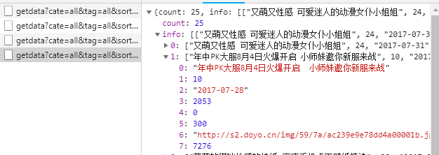
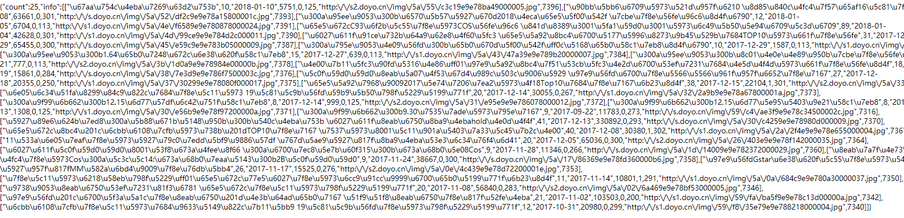
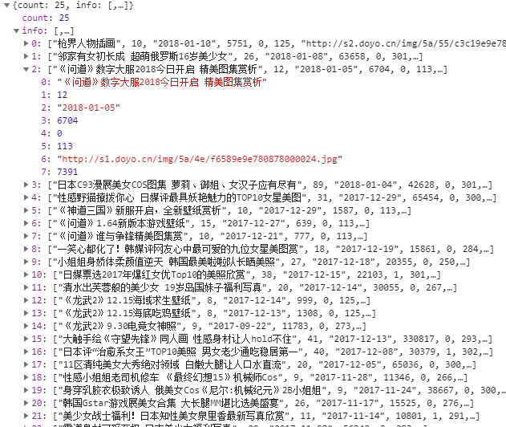
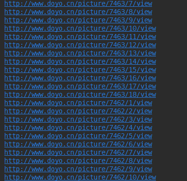
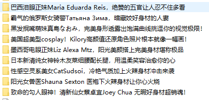

这篇博客写一个python妹子爬虫(嘿嘿嘿)
我们要爬取的网站是http://www.doyo.cn/tu ，网页是这样的：
可以看到，好多美女的。
我们点开其中一个连接，进入其页面，是哇小姐姐真漂亮^^，同时我们发现链接地址地址为http://www.doyo.cn/picture/7399 ，也就是说我们只要知道/picure/后面的数字就可以找到这个小姐姐了！~
思路
大体的思路很简单，就是先爬取每一个小姐姐的连接，然后由每个分类爬取这个小姐姐的所有图片。
导入库
1 | import random |
爬取分类的连接
第一步就是获得分类连接，我们在首页打开Chrome的审查，点开Network选项， 发现在Ajax请求返回了一个Json格式的数据，其中包括了每个小姐姐的信息，其中就有这个小姐姐的网页连接

注意到这第七项的7276就是这个小姐姐的连接的后缀了。
这个Ajax的连接是http://www.doyo.cn/tu/getdata?cate=all&tag=all&sort=updatetime&start=50&count=25 ，也就是说我们只要设置其中的start参数就可以无限的得到这些包含小姐姐信息的Json文件连接了。
由此引出第一个函数：
1 | data_url = 'http://www.doyo.cn/tu/getdata' |
其中我们传入的参数是start，这里的data_url就是Ajax亲贵根网页。构造一个params字典作为参数然后用requests.get请求网页，我们通过我们传入的params，requests将会自动给我们构建出url连接，如果请求失败，我们设置except，自动抛出”Network Error”
解析Ajax请求返回的Json文本
由上一个函数返回值是一个文本，大概是这个样子的

它的本质是一个Json格式的字典，就是前面图片

我们定义一个函数，用json解析文档，其中的number是指小姐姐地址的后缀，count是指小姐姐有几张图片，等下我们会用这两个来构建图片的网址：
1 | def get_one_data(html): |
如果data字典中不是None并且字典中有‘info’我们对info中的值进行操作。这个键值我们yield返回一个生成器，生成器每次都会迭代出一个json格式的文本
解析每个json文本，得到链接列表
上一个函数中返回的是一个生成器，每次迭代都会返回json文本，接下来我们就需要根据每每个json文本得到图片的地址了每张小姐姐图片的地址是http://www.doyo.cn/picture/{number}/{index}/viewhttp://www.doyo.cn/picture/{number}/{index}/view ，其中number是小姐姐的编号，index就是某个小姐姐的所有图片中的某一张的编号了我们用一个for语句来得到每张图片。然后yield出所有的地址
1 | root_url = 'http://www.doyo.cn/picture/{number}/{index}/view' |
解析每个链接，得到每一张图片链接
经过上一步得到的图片列表，其中每一个连接的页面将会是这样：
用正则表达式匹配图片的链接，先写正则表达式：
1 | pattern = re.compile('<img src="(.*?)" id="big_picture" />', re.S) |
然后进行匹配：
1 | def get_img_url(imag_url): |
1 | def get_html(url): |
返回链接。
保存图片
1 | def save_img(res): |
这里我们保存图片时，每个小姐姐都新建一个文件夹存入
main函数
1 |
|
开始爬取

